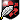

260503 - Mogan e Vahn - spettacolo per mare Coccobello Libeccio nero
12:09 Vahn
Vahn
Vahn 
[Coccobello - rotta per Tellar] [l’aria di mare sembra portare con se una musica leggerissima, una canzonetta in questo giorno che assomiglia a un crepuscolo, tanto è scuro il cielo. La Cocco stava seguendo il Libeccio da un po’ per mare, in maniera maldestra ma costante. Ora sembra aver preso il coraggio di diminuire ancora le distanze.]...E guardo il mar dalla Coccò / Mi annoio un po' / Passo le notti a pensareeee / a un cammello / Mi s’é tutto appiccicato alle ciglia / Dicono che mi farà fare un giro di chigliaaaa…[La Coccobello scivola tranquilla in mare aperto. Una sagoma sottile e veloce, agile, che si avvicina al Libeccio nero. Le due navi sono ancora distanti quanto basta per far arrivare voci ma non gomene. Lo sciabecco stringe il vento al traverso, vele latine ben cazzate, tagliando l’acqua con assetto leggero e prua fine.]...Rutta Carcassa dal boccaporto / Così non va / Ti cucina un ratto morto / E poi chissà / Non sono ancora diventato Magister / Qualcosa farò, ma adesso no…Mogan! [La musica si sospende per un attimo e squilla una voce]...CAMELÈ! M’è giunta voce che ti fai chiamare Re dei Mari! [non si capisce bene dove sia il cantore, e la sua risata cristallina e beffarda leggera sul vento]...ma hai cantato troppo presto…non hai fatto i conti con questa REGINA! [grida sguaiato, ridendo mentre la musica riparte.]12:17 Mogan
Mogan  [Libeccio Nero - Ponte] [ Si trova sul ponte della Libeccio nero, che fende l'acqua come una lama scura. La nave mantiene la rotta piena, sicura, con una sicurezza quasi arrogante. Vele gonfie e disciplinate, non totalmente aperte: le tele sono cazzate quel tanto che basta per mantenere il vantaggio sulla coccobello, senza mai offrire tutta la velocità. Appare quasi come un invito alla sfida. Lo scafo lungo e scuro scivola sull'acqua con un rollio controllato. La prua taglia le onde lasciando una scia netta, biancastra, come una cicatrice marina. Il timoniere tiene la rotta con piccoli aggiustamenti mentre, di tanto in tanto, dona una grassa boccata dalla bottiglia che tiene appesa al collo con un cordino in canapa.] AAAH! [ Il libeccio sbuffa dal naso mentre si avvia in direzione del parapetto di babordo, cerca di mirare oltre alla murata e fissa gli occhi in direzione della coccobello. I rasta, trattenuti all'indietro da una fusciacca nera ben salda alla fronte, frustano l'aria come code di serpenti irrequieti.] TIRATORI! ALLE BALISTE! AHAHA [ Ride sommessamente.]
[Libeccio Nero - Ponte] [ Si trova sul ponte della Libeccio nero, che fende l'acqua come una lama scura. La nave mantiene la rotta piena, sicura, con una sicurezza quasi arrogante. Vele gonfie e disciplinate, non totalmente aperte: le tele sono cazzate quel tanto che basta per mantenere il vantaggio sulla coccobello, senza mai offrire tutta la velocità. Appare quasi come un invito alla sfida. Lo scafo lungo e scuro scivola sull'acqua con un rollio controllato. La prua taglia le onde lasciando una scia netta, biancastra, come una cicatrice marina. Il timoniere tiene la rotta con piccoli aggiustamenti mentre, di tanto in tanto, dona una grassa boccata dalla bottiglia che tiene appesa al collo con un cordino in canapa.] AAAH! [ Il libeccio sbuffa dal naso mentre si avvia in direzione del parapetto di babordo, cerca di mirare oltre alla murata e fissa gli occhi in direzione della coccobello. I rasta, trattenuti all'indietro da una fusciacca nera ben salda alla fronte, frustano l'aria come code di serpenti irrequieti.] TIRATORI! ALLE BALISTE! AHAHA [ Ride sommessamente.]
Mogan [Libeccio Nero - Ponte] [ Si trova sul ponte della Libeccio nero, che fende l'acqua come una lama scura. La nave mantiene la rotta piena, sicura, con una sicurezza quasi arrogante. Vele gonfie e disciplinate, non totalmente aperte: le tele sono cazzate quel tanto che basta per mantenere il vantaggio sulla coccobello, senza mai offrire tutta la velocità. Appare quasi come un invito alla sfida. Lo scafo lungo e scuro scivola sull'acqua con un rollio controllato. La prua taglia le onde lasciando una scia netta, biancastra, come una cicatrice marina. Il timoniere tiene la rotta con piccoli aggiustamenti mentre, di tanto in tanto, dona una grassa boccata dalla bottiglia che tiene appesa al collo con un cordino in canapa.] AAAH! [ Il libeccio sbuffa dal naso mentre si avvia in direzione del parapetto di babordo, cerca di mirare oltre alla murata e fissa gli occhi in direzione della coccobello. I rasta, trattenuti all'indietro da una fusciacca nera ben salda alla fronte, frustano l'aria come code di serpenti irrequieti.] TIRATORI! ALLE BALISTE! AHAHA [ Ride sommessamente.]12:22Vahn [Coccobello - rotta per Tellar] [Un raggio di luna fugace rivela la posizione del cantore. Vahn sta appollaiato sul nido di corvo della Coccobello, là in cima all’albero maestro. La luce turchina si riflette sugli strani abiti che indossa: sembra essersi fatto un’armatura di scaglie di pesce Barbo, particolarmente abbondante in questa stagione. La loro superficie cromata e triangolare riveste il corpo snello dell’elfo, facendone una bellissima creatura ibrida. Tra dolori di cuore e guerre campali, il viso sfatto del cantore sembra mostrare la coda di un episodio psicotico: labbra tinte di rosso sbavato, è chiaramente in uno stato psicofisico alterato, occhi sgranati e del trucco nero che gli cola sulle gote, bianco latte. Nella sua mania, sembra aver costretto la povera ciurma della Cocco ad imparare la canzone: una banda improvvisata con strumenti improbabili sta suonando. Tutta composta da disperati come lui. La canzone dal ritmo popolare, tra lo stonato ed il struggente, prosegue e si fa più udibile via via che le due navi si avvicinano.]...Mogan, non mostri solamente la tua parte migliore / la tua paranza di luce, accalappiatore / Voglio vedere il tuo nostromo! / Mangi troppo cardamomo, Mogan! [Sembra imitare le movenze di Mogan quando si ravana in modo volgare i gioielli di famiglia su quelle strofe. La voce del bardo è alterata, bella ma strascicata. Davvero non si capisce se stia cercando amore o schiaffi in faccia. Lo sciabecco intanto scivola veloce.]..STELLE! Suonate! Fate sentire chi comanda qui! [Lo sciabecco prova ad accostare al Libeccio Nero tenendosi al limite della gittata, ma sbaglia il tempo della virata: orza troppo presto, perde abbrivo e resta esposto al traverso. Le vele fileggiano, la prua scarroccia e la distanza si chiude più del previsto, portandolo dentro il campo delle baliste. Il timoniere corregge tardi: la nave sbandata offre il fianco, ancora senza posizione utile per l’abbordaggio.] [Massimo Stupore ⅓ - Illusionismo 7]
Vahn [Coccobello - rotta per Tellar] [Un raggio di luna fugace rivela la posizione del cantore. Vahn sta appollaiato sul nido di corvo della Coccobello, là in cima all’albero maestro. La luce turchina si riflette sugli strani abiti che indossa: sembra essersi fatto un’armatura di scaglie di pesce Barbo, particolarmente abbondante in questa stagione. La loro superficie cromata e triangolare riveste il corpo snello dell’elfo, facendone una bellissima creatura ibrida. Tra dolori di cuore e guerre campali, il viso sfatto del cantore sembra mostrare la coda di un episodio psicotico: labbra tinte di rosso sbavato, è chiaramente in uno stato psicofisico alterato, occhi sgranati e del trucco nero che gli cola sulle gote, bianco latte. Nella sua mania, sembra aver costretto la povera ciurma della Cocco ad imparare la canzone: una banda improvvisata con strumenti improbabili sta suonando. Tutta composta da disperati come lui. La canzone dal ritmo popolare, tra lo stonato ed il struggente, prosegue e si fa più udibile via via che le due navi si avvicinano.]...Mogan, non mostri solamente la tua parte migliore / la tua paranza di luce, accalappiatore / Voglio vedere il tuo nostromo! / Mangi troppo cardamomo, Mogan! [Sembra imitare le movenze di Mogan quando si ravana in modo volgare i gioielli di famiglia su quelle strofe. La voce del bardo è alterata, bella ma strascicata. Davvero non si capisce se stia cercando amore o schiaffi in faccia. Lo sciabecco intanto scivola veloce.]..STELLE! Suonate! Fate sentire chi comanda qui! [Lo sciabecco prova ad accostare al Libeccio Nero tenendosi al limite della gittata, ma sbaglia il tempo della virata: orza troppo presto, perde abbrivo e resta esposto al traverso. Le vele fileggiano, la prua scarroccia e la distanza si chiude più del previsto, portandolo dentro il campo delle baliste. Il timoniere corregge tardi: la nave sbandata offre il fianco, ancora senza posizione utile per l’abbordaggio.] [Massimo Stupore ⅓ - Illusionismo 7]12:31 Vahn [Coccobello - rotta per Tellar] *massimo stupore 1/3
12:34Mogan [Libeccio Nero - Ponte] [ Resta appeso al parapetto come un cormorano che si asciuga le ali, il busto appena sporgente oltre la murata e gli occhi incollati alla Coccobello. La virata anticipata e le vele che fileggiano, inevitabilmente, portano lo sciabecco a mostrare il fianco scoperto. Lui, per alcuni istanti, non dice niente. Poi scoppia nuovamente a ridere agguantandosi la pancia. Una risata piena, sporca, che gli scuote le spalle mentre si allontana dal parapetto, non prima di aver allungato un colpo della mano destra sul legno.] AAAH! [ Si volta, cercando i marinai con lo sguardo.] Avete visto?[ I marinai non si muovono verso le baliste, qualcuno sputa, qualcuno ride, uno si gratta la barba scuotendo il capo. E' evidente che ormai, anche l'equipaggio, capisca e comprenda i modi del Libeccio. Lo sanno tutti. Lui passa lo sguardo su di loro, soddisfatto, poi torna a guardare la Coccobello che galleggia.] Come ti sei conciato? Mannaia a Rigella Bella! [ Ebete, fissa Vahn.] Se canti ti dimentichi d'aggovernar la cocca! [ Un cenno al timoniere, secco. Alza la mano sinistra mostrando una sequenza di numeri mediante le dita: tre-quattro-uno-uno. In fine mostra le corna. Il Timoniere stringe il legno e la Libeccio muove. Una correzione sottile di rotta, abbastanza per mantenere il vantaggio ma anche per allineare i due scafi, ne troppo lontano, né abbastanza vicino da colpire davvero. ] OH REGINA DEI MARI! TI SEI IMPIGLIATA LA VESTE? O TI PESA LA CORONA? YAAR!
Mogan [Libeccio Nero - Ponte] [ Resta appeso al parapetto come un cormorano che si asciuga le ali, il busto appena sporgente oltre la murata e gli occhi incollati alla Coccobello. La virata anticipata e le vele che fileggiano, inevitabilmente, portano lo sciabecco a mostrare il fianco scoperto. Lui, per alcuni istanti, non dice niente. Poi scoppia nuovamente a ridere agguantandosi la pancia. Una risata piena, sporca, che gli scuote le spalle mentre si allontana dal parapetto, non prima di aver allungato un colpo della mano destra sul legno.] AAAH! [ Si volta, cercando i marinai con lo sguardo.] Avete visto?[ I marinai non si muovono verso le baliste, qualcuno sputa, qualcuno ride, uno si gratta la barba scuotendo il capo. E' evidente che ormai, anche l'equipaggio, capisca e comprenda i modi del Libeccio. Lo sanno tutti. Lui passa lo sguardo su di loro, soddisfatto, poi torna a guardare la Coccobello che galleggia.] Come ti sei conciato? Mannaia a Rigella Bella! [ Ebete, fissa Vahn.] Se canti ti dimentichi d'aggovernar la cocca! [ Un cenno al timoniere, secco. Alza la mano sinistra mostrando una sequenza di numeri mediante le dita: tre-quattro-uno-uno. In fine mostra le corna. Il Timoniere stringe il legno e la Libeccio muove. Una correzione sottile di rotta, abbastanza per mantenere il vantaggio ma anche per allineare i due scafi, ne troppo lontano, né abbastanza vicino da colpire davvero. ] OH REGINA DEI MARI! TI SEI IMPIGLIATA LA VESTE? O TI PESA LA CORONA? YAAR!12:38Vahn [Coccobello - rotta per Tellar] …Mogan, ti ho visto dappertutto, anche in fondo al mare / Ma io lo so che, dopo un po', ti stanchi di gracchiare / Restiamo insieme questa notte / Mi hai detto no per troppe volte, Mogan! [lì in cima alla coffa, mentre canta, l’elfo stappa una boccetta e si versa un liquido trasparente addosso, che scivola denso sull’armatura leggera di scaglie di pesce riflettendo mille barbagli di luna] Per evitar che l’amor tra noi finisca / Maseeri ha pure aperto una bisca / Se sono triste mi travesto / Come Thamior / Poi salgo sopra i tetti e grido al ventoooo / Libeccio mio i piedi te li lavo iooooo [Il timoniere intanto governa con piccoli colpi di barra, sfruttando raffiche irregolari; l’equipaggio è misero e fatto da ragazzini, storpi, donne mostruose e scappati di casa, ma mentre l’orchestrina improvvisata continua a suonare, qualcuno sembra anche pronto a delle improbabili manovre di abbordaggio, cime e rampini in mano. Qualcuno ha delle specie di bolas in mano.]...Cammello! Questo è lo spettacolo IRREALE! [si passa una mano sulla faccia non sentendosela più] STELLE! AL MIO COMANDO LASCIATE LA VOSTRA SCIA! [Una donna tra la ciurma con tre dita alza gli occhi al cielo, esasperata. A distanza utile, lo sciabecco orza deciso, rallenta quel tanto che basta per cercare di affiancare al giardinetto del bersaglio.] Ho Guendalina sotto il letto / Non mi alzo più / Penso a un cammello scatarretto / Non dormo più / Mi dice “Mannaia” e mi confondo / E penso che in fondo, sì, sto bene così, Mogan! [Il cantore tutto cromato e gocciolante afferra una gomena sciolta e se la rigira più e più volte attorno al braccio, cantando] mi dici Rigel Panaia ma so che sei innamorato / Chissà quante canzoni ti hanno già dedicato / Ma io non sono come gli altri / Per te ho progetti più importanti, Mogan! [la ciurma ogni tanto si lancia occhiate perplesse ma continua a suonare per il suo capitano. Con la mano libera l’elfo sfodera la spada consacrata e fissa giù verso il capitano coi rasta. Lo indica con la punta dell’arma e un sorrisaccio]...Mogan, non ti toccare lì, dai, non fare lo scemo / Se ti sfido un’altra volta poi me lo meno / Sei troppo furbo per rantolare / Solo tu mi fai sganasciare, Mogan! [Massimo Stupore 2 / 3 - Illusionismo 7]
Vahn [Coccobello - rotta per Tellar] …Mogan, ti ho visto dappertutto, anche in fondo al mare / Ma io lo so che, dopo un po', ti stanchi di gracchiare / Restiamo insieme questa notte / Mi hai detto no per troppe volte, Mogan! [lì in cima alla coffa, mentre canta, l’elfo stappa una boccetta e si versa un liquido trasparente addosso, che scivola denso sull’armatura leggera di scaglie di pesce riflettendo mille barbagli di luna] Per evitar che l’amor tra noi finisca / Maseeri ha pure aperto una bisca / Se sono triste mi travesto / Come Thamior / Poi salgo sopra i tetti e grido al ventoooo / Libeccio mio i piedi te li lavo iooooo [Il timoniere intanto governa con piccoli colpi di barra, sfruttando raffiche irregolari; l’equipaggio è misero e fatto da ragazzini, storpi, donne mostruose e scappati di casa, ma mentre l’orchestrina improvvisata continua a suonare, qualcuno sembra anche pronto a delle improbabili manovre di abbordaggio, cime e rampini in mano. Qualcuno ha delle specie di bolas in mano.]...Cammello! Questo è lo spettacolo IRREALE! [si passa una mano sulla faccia non sentendosela più] STELLE! AL MIO COMANDO LASCIATE LA VOSTRA SCIA! [Una donna tra la ciurma con tre dita alza gli occhi al cielo, esasperata. A distanza utile, lo sciabecco orza deciso, rallenta quel tanto che basta per cercare di affiancare al giardinetto del bersaglio.] Ho Guendalina sotto il letto / Non mi alzo più / Penso a un cammello scatarretto / Non dormo più / Mi dice “Mannaia” e mi confondo / E penso che in fondo, sì, sto bene così, Mogan! [Il cantore tutto cromato e gocciolante afferra una gomena sciolta e se la rigira più e più volte attorno al braccio, cantando] mi dici Rigel Panaia ma so che sei innamorato / Chissà quante canzoni ti hanno già dedicato / Ma io non sono come gli altri / Per te ho progetti più importanti, Mogan! [la ciurma ogni tanto si lancia occhiate perplesse ma continua a suonare per il suo capitano. Con la mano libera l’elfo sfodera la spada consacrata e fissa giù verso il capitano coi rasta. Lo indica con la punta dell’arma e un sorrisaccio]...Mogan, non ti toccare lì, dai, non fare lo scemo / Se ti sfido un’altra volta poi me lo meno / Sei troppo furbo per rantolare / Solo tu mi fai sganasciare, Mogan! [Massimo Stupore 2 / 3 - Illusionismo 7]12:48Mogan [Libeccio Nero - Ponte] [ Resta li, inizialmente con un ghigno divertito ma di li a poco qualcosa si incrina. Gli occhi, neri e taglianti fino ad un attimo prima si fanno larghi, lucidi, come se la voce di Vahn gli fosse entrata nelle orecchie e non volesse più uscirne. Resta appoggiato al parapetto con la testa inclinata di lato. Ascolta e basta. Le risate dei marinai attorno a lui si affievoliscono, qualcuno smette, qualcuno si scambia occhiate storte. Lui non risponde. Il vento porta la canzone, le parole si attaccano al legno della nave come denti di cane sotto la chiglia. Lo stivale destro si muove piano, fuori tempo, come se stesse cercando di seguire il ritmmo] RIGEL DANZANTE! [ Biascica.] Cantate ciurma! Seguite Ivano! [ Ordina mentre la Libeccio continua la sua rotta.]
Mogan [Libeccio Nero - Ponte] [ Resta li, inizialmente con un ghigno divertito ma di li a poco qualcosa si incrina. Gli occhi, neri e taglianti fino ad un attimo prima si fanno larghi, lucidi, come se la voce di Vahn gli fosse entrata nelle orecchie e non volesse più uscirne. Resta appoggiato al parapetto con la testa inclinata di lato. Ascolta e basta. Le risate dei marinai attorno a lui si affievoliscono, qualcuno smette, qualcuno si scambia occhiate storte. Lui non risponde. Il vento porta la canzone, le parole si attaccano al legno della nave come denti di cane sotto la chiglia. Lo stivale destro si muove piano, fuori tempo, come se stesse cercando di seguire il ritmmo] RIGEL DANZANTE! [ Biascica.] Cantate ciurma! Seguite Ivano! [ Ordina mentre la Libeccio continua la sua rotta.]Vahn riesce a simulare un fuoco, con enorme stupore di Mogan, che resta a bocca aperta. Efficienza 49 caso 46
12:52Vahn [Coccobello - Libeccio Nero - per aria] [un sorriso pazzo quando sente le voci delle due ciurme unirsi]…Son pieno di maledizioni / Sei stato te? / Adoro i tuoi treccioni / Fanno per me / Non metterò la testa a posto / Mai! A Schuameb vedrai che mi sposerai, Mogan! [e sull’ultimo giro di note storte, malinconico e bellissimo, l’elfo si tuffa nel vuoto verso il Libeccio. La gomena si tende e il cantore inizia un lento e ampio cerchio a mezz’aria, legato per un braccio, attorno all’albero maestro. La sostanza che s’è versato addosso sembra reagire alla pressione del vento e si attiva di lampi di luce azzurra intensa. Sono i dinoflagellati bioluminescenti che fanno ora del bardo una stella cadente, una pulsar che saetta tra le due navi, lasciando la sua luminosa scia e rendendo al contempo il cantore un bersaglio perfetto, nella notte scura.]...Mogan, non dirmi che a quest'ora tu già devi salpare / In fondo, è presto, possiamo ancora pisciare / Spruzziamo rosa su ogni porto! / Se sembra sciocco, cosa importa, Mogan! [nel suo lento giro nella notte, l’elfo muove i piedi come se stesse camminando leggero nell’aria, verso il basso. L’illusione di un folle che volteggia verso il suo bersaglio, stella tra le stelle. La musica ha un crescendo cacofonico strappalacrime]...Mogan, che cosa vuoi che dica, non so duellare / Ti posso offrire solo una beccaccia e poi farmi derubare! / Vedrai, saremo un po' felici / E forse molto più che amici, Mogan! [la gomena sembra aver svolto la sua ultima spira sull’albero maestro. La spada si riempie di luna e l’armatura divampa in un ultimo lampo bioluminescente quando il cantore molla la presa e incita la ciurma] Stelline mie, seguitemi! ALL’ARREMBAGGIOOO! [volteggia in aria luminoso come un sirenetto strafatto cercando di atterrare sul ponte della Libeccio Nero. Nessuno della sua ciurma lo segue. La musica muore zoppicando mentre quelli della Cocco osservano il loro capitano MIRACOLOSAMENTE atterrare con grazia sul legno, come una trota salmonata, senza rompersi l’osso del collo. Anche il bardo sembra sorpreso, rimandendo in ginocchio con le braccia aperte in un attimo di silenzio. Solo Bibi e Tamm, due gemelli di 16 anni col cappio al collo, tirano ridendo due gavettoni fatti di budello animale contro la Libeccio. Finiscono sul ponte esplodendo di liquido rosa, probabilmente succo di barbabietole. Uno colpisce Vahn in pieno, ponendo fine a quello spettacolo osceno.] [Massimo Stupore 3 / 3 Illusionismo 7]
Vahn [Coccobello - Libeccio Nero - per aria] [un sorriso pazzo quando sente le voci delle due ciurme unirsi]…Son pieno di maledizioni / Sei stato te? / Adoro i tuoi treccioni / Fanno per me / Non metterò la testa a posto / Mai! A Schuameb vedrai che mi sposerai, Mogan! [e sull’ultimo giro di note storte, malinconico e bellissimo, l’elfo si tuffa nel vuoto verso il Libeccio. La gomena si tende e il cantore inizia un lento e ampio cerchio a mezz’aria, legato per un braccio, attorno all’albero maestro. La sostanza che s’è versato addosso sembra reagire alla pressione del vento e si attiva di lampi di luce azzurra intensa. Sono i dinoflagellati bioluminescenti che fanno ora del bardo una stella cadente, una pulsar che saetta tra le due navi, lasciando la sua luminosa scia e rendendo al contempo il cantore un bersaglio perfetto, nella notte scura.]...Mogan, non dirmi che a quest'ora tu già devi salpare / In fondo, è presto, possiamo ancora pisciare / Spruzziamo rosa su ogni porto! / Se sembra sciocco, cosa importa, Mogan! [nel suo lento giro nella notte, l’elfo muove i piedi come se stesse camminando leggero nell’aria, verso il basso. L’illusione di un folle che volteggia verso il suo bersaglio, stella tra le stelle. La musica ha un crescendo cacofonico strappalacrime]...Mogan, che cosa vuoi che dica, non so duellare / Ti posso offrire solo una beccaccia e poi farmi derubare! / Vedrai, saremo un po' felici / E forse molto più che amici, Mogan! [la gomena sembra aver svolto la sua ultima spira sull’albero maestro. La spada si riempie di luna e l’armatura divampa in un ultimo lampo bioluminescente quando il cantore molla la presa e incita la ciurma] Stelline mie, seguitemi! ALL’ARREMBAGGIOOO! [volteggia in aria luminoso come un sirenetto strafatto cercando di atterrare sul ponte della Libeccio Nero. Nessuno della sua ciurma lo segue. La musica muore zoppicando mentre quelli della Cocco osservano il loro capitano MIRACOLOSAMENTE atterrare con grazia sul legno, come una trota salmonata, senza rompersi l’osso del collo. Anche il bardo sembra sorpreso, rimandendo in ginocchio con le braccia aperte in un attimo di silenzio. Solo Bibi e Tamm, due gemelli di 16 anni col cappio al collo, tirano ridendo due gavettoni fatti di budello animale contro la Libeccio. Finiscono sul ponte esplodendo di liquido rosa, probabilmente succo di barbabietole. Uno colpisce Vahn in pieno, ponendo fine a quello spettacolo osceno.] [Massimo Stupore 3 / 3 Illusionismo 7]13:03Mogan [Libeccio Nero - Ponte] [ Bocca semi aperta mentre segue la scena, con gli occhi incollati su quella scia azzurra che taglia il cielo come una bestemmia luminosa. Il ritmo della canzone gli pulsa nelle tempie ma, quando vhan atterra sul ponte vivo, intero, assurdo, qualcosa si spezza di colpo. Le pupille si restringono, il volto si storce, come se avesse appena morso ferro rugginoso.] Aarrh [ Un ringhio passo gli raschia la gola mentre si stacca definitivamente dal parapetto con uno scatto.] Bastaa! Vuoi vedermi vomitare le putella dalle risate! E poi! [ La voce espolde, piena, brutale. La sua, non più trascinata dal canto, non più ipnotizzata. Fa due passi avanti, pesanti, lasciando che il legno gemi sotto i suoi stivali. Si porta una mano alla testa scuotendo i rasta, come a scacciare via gli ultimi strascichi di quella melodia ipnotizzante. Poi fissa Vahn.] Mi chiedo com'hai fatto a restare vivo, per ora. Ma non preoccuparti, se mai tu dovessi schiantar morto penserò io a scavarti la fossa. Amico. [ Annuisce.] Ivano Infossati.[ La ciurma, improvvisamente, si volta in direzione di Vahn. Le mani si liberano dalle gomene e dai ferri da lavoro ed iniziano ad applaudire. Mogan, lascia apparire un sorriso tagliente, placcato in oro zecchino, prima di unirsi a all'applauso.]
Mogan [Libeccio Nero - Ponte] [ Bocca semi aperta mentre segue la scena, con gli occhi incollati su quella scia azzurra che taglia il cielo come una bestemmia luminosa. Il ritmo della canzone gli pulsa nelle tempie ma, quando vhan atterra sul ponte vivo, intero, assurdo, qualcosa si spezza di colpo. Le pupille si restringono, il volto si storce, come se avesse appena morso ferro rugginoso.] Aarrh [ Un ringhio passo gli raschia la gola mentre si stacca definitivamente dal parapetto con uno scatto.] Bastaa! Vuoi vedermi vomitare le putella dalle risate! E poi! [ La voce espolde, piena, brutale. La sua, non più trascinata dal canto, non più ipnotizzata. Fa due passi avanti, pesanti, lasciando che il legno gemi sotto i suoi stivali. Si porta una mano alla testa scuotendo i rasta, come a scacciare via gli ultimi strascichi di quella melodia ipnotizzante. Poi fissa Vahn.] Mi chiedo com'hai fatto a restare vivo, per ora. Ma non preoccuparti, se mai tu dovessi schiantar morto penserò io a scavarti la fossa. Amico. [ Annuisce.] Ivano Infossati.[ La ciurma, improvvisamente, si volta in direzione di Vahn. Le mani si liberano dalle gomene e dai ferri da lavoro ed iniziano ad applaudire. Mogan, lascia apparire un sorriso tagliente, placcato in oro zecchino, prima di unirsi a all'applauso.]13:09Vahn [Libeccio Nero - Ponte] [ride e piange assieme, Barbo rosa cangiante, ansimando dopo il volo]..STELLE avanti con..me? [si volta verso la Coccobello allargando le braccia vedendo che nessuno l’ha seguito]..ah! Stelle traditrici! [torna a voltarsi con due pupille grosse come lune verso Mogan e la ciurma, con un sorriso che ha tutto dentro: felicità, spavento, tristezza, le onde del mare. Quando sente applaudire, lascia cadere la lama a terra e per abitudine si inchina a destra e sinistra, tutto bagnato e gocciolante]...grazie fratello, me lo chiedo anch’io. [lo guarda avvicinarsi, passandosi due mani sulla faccia per ripulirla. Puzza di pesce e profuma di cardamomo]…Cammello mio dimmi te, che senso ha…strappare uno all’abbraccio della morte, per poi condannarlo di nuovo alla stessa sorte? [gli chiede col cuore in mano, disperato, straparlando eppure dicendo niente di più vero. Il trucco tutto sfatto in faccia, la maschera dell’amore tragico.]…hai da bere? [chiede poi leggero come se niente fosse]…Tutto sto mare e c’ho la gola che è un deserto. [lo guarda bramoso e secco come un’acciuga]
Vahn [Libeccio Nero - Ponte] [ride e piange assieme, Barbo rosa cangiante, ansimando dopo il volo]..STELLE avanti con..me? [si volta verso la Coccobello allargando le braccia vedendo che nessuno l’ha seguito]..ah! Stelle traditrici! [torna a voltarsi con due pupille grosse come lune verso Mogan e la ciurma, con un sorriso che ha tutto dentro: felicità, spavento, tristezza, le onde del mare. Quando sente applaudire, lascia cadere la lama a terra e per abitudine si inchina a destra e sinistra, tutto bagnato e gocciolante]...grazie fratello, me lo chiedo anch’io. [lo guarda avvicinarsi, passandosi due mani sulla faccia per ripulirla. Puzza di pesce e profuma di cardamomo]…Cammello mio dimmi te, che senso ha…strappare uno all’abbraccio della morte, per poi condannarlo di nuovo alla stessa sorte? [gli chiede col cuore in mano, disperato, straparlando eppure dicendo niente di più vero. Il trucco tutto sfatto in faccia, la maschera dell’amore tragico.]…hai da bere? [chiede poi leggero come se niente fosse]…Tutto sto mare e c’ho la gola che è un deserto. [lo guarda bramoso e secco come un’acciuga]13:16Mogan [Libeccio Nero - Ponte] [ L'applauso fa cessando, si smorza piano, come risacca che si ritira lasciando il legno umido. Inclina il capo, studiando il cantore da vicino. Il sorriso placcato in oro resta stampato sulle sue labbra ma si assottiglia.] Mh.. [ Biascica, piano.] Ripetila.. che senso ha..strappare uno alla morte..per poi ributtarcelo dentro? [ Si ferma ad un braccio da Vahn, occhi neri piantati nei suoi, senza più ombra del sorriso. Curiosità dura, quasi infastidita.] Sembran parole grosse, fratello. Parole che puzzano di scelta o di rimpianto.[ Sputa, di lato, senza mai distogliere lo sguardo.] Oye, Mozzo. Porta da bere a questa lisca luminescente prima che si secchi le budella! Porta quello buono, non la brodaglia per pulire la sentina. [ Torna con lo sguardo su Vahn.] Raccontami meglio.
Mogan [Libeccio Nero - Ponte] [ L'applauso fa cessando, si smorza piano, come risacca che si ritira lasciando il legno umido. Inclina il capo, studiando il cantore da vicino. Il sorriso placcato in oro resta stampato sulle sue labbra ma si assottiglia.] Mh.. [ Biascica, piano.] Ripetila.. che senso ha..strappare uno alla morte..per poi ributtarcelo dentro? [ Si ferma ad un braccio da Vahn, occhi neri piantati nei suoi, senza più ombra del sorriso. Curiosità dura, quasi infastidita.] Sembran parole grosse, fratello. Parole che puzzano di scelta o di rimpianto.[ Sputa, di lato, senza mai distogliere lo sguardo.] Oye, Mozzo. Porta da bere a questa lisca luminescente prima che si secchi le budella! Porta quello buono, non la brodaglia per pulire la sentina. [ Torna con lo sguardo su Vahn.] Raccontami meglio.13:26Vahn [Libeccio Nero - Ponte] [si passa le mani tra i capelli chiari ora tinti di rosa dal liquido che l’ha colpito. Guarda Mogan con gli occhi di chi si è perduto]…Adema, Blu dei gigli Blu. Il mio bel giglio che s’era perduto e poi reciso da lama assassina…giusta forse sì, ma assassina…[lo stato psicofisico alterato l’ha imbevuto di una parlantina morbida, contorta ma sincera. Si confessa lì dove può, in mezzo al mare.]…l’hanno riportato in vita…[allarga le braccia, scuotendo il capo incredulo. Il sorriso rotto]…forse il primo e l’ultimo dei senza re ad essere strappato dalla casa dei padri e ora…ora..dopo neanche un giro di luna…[è acqua di mare o sono lacrime?]…lo ricacciano giù. Via…[fa un gesto con il braccio, come a cancellare la storia di un’intera vita.]…come se c’avessero ripensato…[guarda il mare, rabbia e dolore.]..o forse è lui che non vuole vivere quella sua vergogna…[Torna a fissare Mogan]…dimmi, tu sai qualcosa? Ti hanno parlato le tue sirene…? Loro…[si distrae vedendo arrivare il mozzo con una bottiglia]..ahhh dai qua che sto morendo…
Vahn [Libeccio Nero - Ponte] [si passa le mani tra i capelli chiari ora tinti di rosa dal liquido che l’ha colpito. Guarda Mogan con gli occhi di chi si è perduto]…Adema, Blu dei gigli Blu. Il mio bel giglio che s’era perduto e poi reciso da lama assassina…giusta forse sì, ma assassina…[lo stato psicofisico alterato l’ha imbevuto di una parlantina morbida, contorta ma sincera. Si confessa lì dove può, in mezzo al mare.]…l’hanno riportato in vita…[allarga le braccia, scuotendo il capo incredulo. Il sorriso rotto]…forse il primo e l’ultimo dei senza re ad essere strappato dalla casa dei padri e ora…ora..dopo neanche un giro di luna…[è acqua di mare o sono lacrime?]…lo ricacciano giù. Via…[fa un gesto con il braccio, come a cancellare la storia di un’intera vita.]…come se c’avessero ripensato…[guarda il mare, rabbia e dolore.]..o forse è lui che non vuole vivere quella sua vergogna…[Torna a fissare Mogan]…dimmi, tu sai qualcosa? Ti hanno parlato le tue sirene…? Loro…[si distrae vedendo arrivare il mozzo con una bottiglia]..ahhh dai qua che sto morendo…13:35Mogan [Libeccio Nero - Ponte] [ Il mozzo torna, dinoccolato, al cospetto dei due. Porge a Vahn una bottiglia dal contenuto ambrato, piena ma priva del tappo. Lui resta a fissare il cantore mentre parla, non lo interrompe mai. Le parole gli scorrono addosso, ma qualcosa, forse il nome di Adema, forse quel " riportato in vita", gli fa contrarre appena la mascella. Il sorriso si spegne, lasciando solo una linea dura sotto i baffetti.] Tch![ Solleva la mano destra, lenta, e con l'indice ruvido, sporco di pece e sague rappreso, tenta di intercettare una lacrima che scivola sulla guancia di Vahn. Se il gesto sarà concesso tenterà di trascinarla via con un gesto secco, quasi infastidito, per nulla gentile.] Non piangere sul mio ponte, Fratello. Porta male. [ Il suo sguardo cambia di colpo, gli occhi si stringono, la mano si ritrae come se avesse toccato qualcosa di sbagliato. Subito dopo, senza pensarci, si porta due dita alla fronte e poi al petto, tracciando un segno storto.] Mare fermo, sangue caldo, ossa già e spirito al largo. Via via, torna a dormire, dove devi..[ Una cantilena esce bassa, raschiata, più un borbottio che una vera preghiera. Una sorta di formula sporca che i marinai usano per scacciare la malasorte. ] I morti restano morti, è così che tiene il conto il mare. Ma dimmi, chi ha scelto tutto questo? Le mie Sirene hanno il vizio dei dadi e del buon vino, sono inutili quanto l'Imperatore Albino.
Mogan [Libeccio Nero - Ponte] [ Il mozzo torna, dinoccolato, al cospetto dei due. Porge a Vahn una bottiglia dal contenuto ambrato, piena ma priva del tappo. Lui resta a fissare il cantore mentre parla, non lo interrompe mai. Le parole gli scorrono addosso, ma qualcosa, forse il nome di Adema, forse quel " riportato in vita", gli fa contrarre appena la mascella. Il sorriso si spegne, lasciando solo una linea dura sotto i baffetti.] Tch![ Solleva la mano destra, lenta, e con l'indice ruvido, sporco di pece e sague rappreso, tenta di intercettare una lacrima che scivola sulla guancia di Vahn. Se il gesto sarà concesso tenterà di trascinarla via con un gesto secco, quasi infastidito, per nulla gentile.] Non piangere sul mio ponte, Fratello. Porta male. [ Il suo sguardo cambia di colpo, gli occhi si stringono, la mano si ritrae come se avesse toccato qualcosa di sbagliato. Subito dopo, senza pensarci, si porta due dita alla fronte e poi al petto, tracciando un segno storto.] Mare fermo, sangue caldo, ossa già e spirito al largo. Via via, torna a dormire, dove devi..[ Una cantilena esce bassa, raschiata, più un borbottio che una vera preghiera. Una sorta di formula sporca che i marinai usano per scacciare la malasorte. ] I morti restano morti, è così che tiene il conto il mare. Ma dimmi, chi ha scelto tutto questo? Le mie Sirene hanno il vizio dei dadi e del buon vino, sono inutili quanto l'Imperatore Albino.13:38Mogan [Libeccio Nero - Ponte] Vuoi salvarlo? [ Incalza, alzando il mento.]
Mogan [Libeccio Nero - Ponte] Vuoi salvarlo? [ Incalza, alzando il mento.]13:46Vahn [Libeccio Nero - Ponte] [si lascia toccare ma guarda Mogan con un’espressione stanca ma in qualche modo pregna di una certa fierezza]…non sono lacrime, non ne ho più da versare. È piscio e mare e barbabietola. [si passa anche lui una mano sul volto, e più che pulirlo lo sta peggiorando. Trucco e salsedine lo rendono un quadro astratto. Beve sorsi copiosi dalla bottiglia ambrata, come se fosse acqua. Le sue scaglie brillano ancora, come i ferri da marinaio sulle sue orecchie a punta]…ahhh…grazie. [dice dissetato. Poi scuote il capo]…non posso salvare qualcuno da se stesso, Camelé. Ci ho provato ma troppo poco…troppo tardi e…alla fine penso che sia stata una sua scelta. [abbassa gli occhi al ponte, poi torna a guardarlo]…l’ho lasciato andare…anche se fa male. Déi se fa male. [scuote il capo, bevendo ancora]…ma basta…[sorride infine, tirato]…ho voglia di altre rotte. Nuovi mari…stai ancora pensando di partire? [abbassa la bottiglia, sbattendosi il palmo in faccia]…argh devo parlare anche con Bill prima…l’hai visto? [il bardo è un’insalata tutta rotta di pensieri e frasi]…di quella faccenda di Keleldur. [sospira esausto colabrodo.]
Vahn [Libeccio Nero - Ponte] [si lascia toccare ma guarda Mogan con un’espressione stanca ma in qualche modo pregna di una certa fierezza]…non sono lacrime, non ne ho più da versare. È piscio e mare e barbabietola. [si passa anche lui una mano sul volto, e più che pulirlo lo sta peggiorando. Trucco e salsedine lo rendono un quadro astratto. Beve sorsi copiosi dalla bottiglia ambrata, come se fosse acqua. Le sue scaglie brillano ancora, come i ferri da marinaio sulle sue orecchie a punta]…ahhh…grazie. [dice dissetato. Poi scuote il capo]…non posso salvare qualcuno da se stesso, Camelé. Ci ho provato ma troppo poco…troppo tardi e…alla fine penso che sia stata una sua scelta. [abbassa gli occhi al ponte, poi torna a guardarlo]…l’ho lasciato andare…anche se fa male. Déi se fa male. [scuote il capo, bevendo ancora]…ma basta…[sorride infine, tirato]…ho voglia di altre rotte. Nuovi mari…stai ancora pensando di partire? [abbassa la bottiglia, sbattendosi il palmo in faccia]…argh devo parlare anche con Bill prima…l’hai visto? [il bardo è un’insalata tutta rotta di pensieri e frasi]…di quella faccenda di Keleldur. [sospira esausto colabrodo.]13:56Mogan [Libeccio Nero - Ponte] Mh..S'hai già fatto tutto quello che potevi..[ Borbotta, senza addolcire il tono. Alza le spalle, mentre gli occhi scorrono addosso al cantore. Poi sbuffa, divertito.] Bill? Se non stà già ficcando il naso negli affari di qualcuno..starà contando monete. E' fissato con il suo tesoretto. [ Agita il capo frustando l'aria con i rasta.] Abbiamo più di un ballo a cui donare le nostre natiche danzerine. Dobbiamo scegliere, ultimamente ho dei problemi con la reggenza di Tellar. Non accettano che il Re dei mari tutti qui presente si sia autoproclamato Reggente. [ Ringhia.] Chi ha distrutto il pioppo demoniaco, eh? IO, ero appeso alle sue fronde! non il reggente! Mannaia. [ Tarantolanto, lancia un paio di pugni all'aria.] Parla con Bill, sta a lui scegliere. Io ho da pensare alle scartoffie del porto. Cazzo se è pesante fare il Reggente, anco per finta..
Mogan [Libeccio Nero - Ponte] Mh..S'hai già fatto tutto quello che potevi..[ Borbotta, senza addolcire il tono. Alza le spalle, mentre gli occhi scorrono addosso al cantore. Poi sbuffa, divertito.] Bill? Se non stà già ficcando il naso negli affari di qualcuno..starà contando monete. E' fissato con il suo tesoretto. [ Agita il capo frustando l'aria con i rasta.] Abbiamo più di un ballo a cui donare le nostre natiche danzerine. Dobbiamo scegliere, ultimamente ho dei problemi con la reggenza di Tellar. Non accettano che il Re dei mari tutti qui presente si sia autoproclamato Reggente. [ Ringhia.] Chi ha distrutto il pioppo demoniaco, eh? IO, ero appeso alle sue fronde! non il reggente! Mannaia. [ Tarantolanto, lancia un paio di pugni all'aria.] Parla con Bill, sta a lui scegliere. Io ho da pensare alle scartoffie del porto. Cazzo se è pesante fare il Reggente, anco per finta..14:04Vahn [Libeccio Nero - Ponte] [lo ascolta e lo guarda con i suoi occhioni come se stesse guardando una creatura soprannaturale. Il suo sguardo scivola lento sulla figura del Libeccio, fissandosi sui suoi rasta per qualche lungo, lunghissimo attimo di silenzio. Le labbra appena separate. Ci impiega un attimo a tornare alla realtà, chissà cosa avrà visto.]…uh..oh…già. VERO! Devono riconoscertelo! [annuisce convinto]…ho visto coi miei occhi il cammello ballerino e le sue schiere di mare [con voce epica, le mani al petto e gli occhi al cielo]…il vostro capitano volteggiava tra i rami putrefatti [muove qualche passo rivolgendosi alla ciurma come a iniziare una storia. Raccatta la sua spada da terra, tutta rosa ora.]…come biscia furente nella cruna di un ago, la sua spada rovente colpì, il cuore putrefacente…[inizia un nuovo spettacolo, un duello immaginario che ripercorre le gesta del Libeccio nella battaglia campale contro Chaos. Lo spettacolo, onesto e carambolesco, finirà quando gli effetti di ciò che l’elfo ha trangugiato finiranno e le sue spoglie rimarranno svuotate di quella energia caotica e sincera che le ha tenute in piedi, miracolosamente, fino ad ora. Poi verrà risbattuto sulla Coccobello come una lisca di pesce spolpata. Se gli andrà bene vivo, e con tutto addosso.]
Vahn [Libeccio Nero - Ponte] [lo ascolta e lo guarda con i suoi occhioni come se stesse guardando una creatura soprannaturale. Il suo sguardo scivola lento sulla figura del Libeccio, fissandosi sui suoi rasta per qualche lungo, lunghissimo attimo di silenzio. Le labbra appena separate. Ci impiega un attimo a tornare alla realtà, chissà cosa avrà visto.]…uh..oh…già. VERO! Devono riconoscertelo! [annuisce convinto]…ho visto coi miei occhi il cammello ballerino e le sue schiere di mare [con voce epica, le mani al petto e gli occhi al cielo]…il vostro capitano volteggiava tra i rami putrefatti [muove qualche passo rivolgendosi alla ciurma come a iniziare una storia. Raccatta la sua spada da terra, tutta rosa ora.]…come biscia furente nella cruna di un ago, la sua spada rovente colpì, il cuore putrefacente…[inizia un nuovo spettacolo, un duello immaginario che ripercorre le gesta del Libeccio nella battaglia campale contro Chaos. Lo spettacolo, onesto e carambolesco, finirà quando gli effetti di ciò che l’elfo ha trangugiato finiranno e le sue spoglie rimarranno svuotate di quella energia caotica e sincera che le ha tenute in piedi, miracolosamente, fino ad ora. Poi verrà risbattuto sulla Coccobello come una lisca di pesce spolpata. Se gli andrà bene vivo, e con tutto addosso.]14:10Mogan [Libeccio Nero - Ponte] [ Si ferma a metà del ponte quando Vahn ricomincia. Non si volta, resta di spalle, con le mani sui fianchi e il petto che si alza, mentre la voce suonante del cantore riprende a serpeggiare tra le tavole della cocca. Poi, piano, gira il capo. Lo guarda, serio. Non interrompe. Gli occhi neri seguono ogni gesto dell'elfo, la spada, i passi, quell'epica sgangerata che prende forma tra vento e follia. La ciurma attorno si lascia andare: qualcuno fischia, qualcuno batte il ritmo col piede. Lui resta immobile, come se incastrato tra il fastidio e qualcosa che assomiglia, lontanamente, a rispetto.] SEGUICI IVANO! [ Squilla osservando Vahn tornare a bordo della Coccobello.] TIMONE, TIENI LA ROTTA! [ La libeccio nero riprenderà a fendere il mare, lasciandosi alle spalle musica e scie di luce.]
Mogan [Libeccio Nero - Ponte] [ Si ferma a metà del ponte quando Vahn ricomincia. Non si volta, resta di spalle, con le mani sui fianchi e il petto che si alza, mentre la voce suonante del cantore riprende a serpeggiare tra le tavole della cocca. Poi, piano, gira il capo. Lo guarda, serio. Non interrompe. Gli occhi neri seguono ogni gesto dell'elfo, la spada, i passi, quell'epica sgangerata che prende forma tra vento e follia. La ciurma attorno si lascia andare: qualcuno fischia, qualcuno batte il ritmo col piede. Lui resta immobile, come se incastrato tra il fastidio e qualcosa che assomiglia, lontanamente, a rispetto.] SEGUICI IVANO! [ Squilla osservando Vahn tornare a bordo della Coccobello.] TIMONE, TIENI LA ROTTA! [ La libeccio nero riprenderà a fendere il mare, lasciandosi alle spalle musica e scie di luce.]Formattazione, colori e immagini recuperati dal DOCX originale.